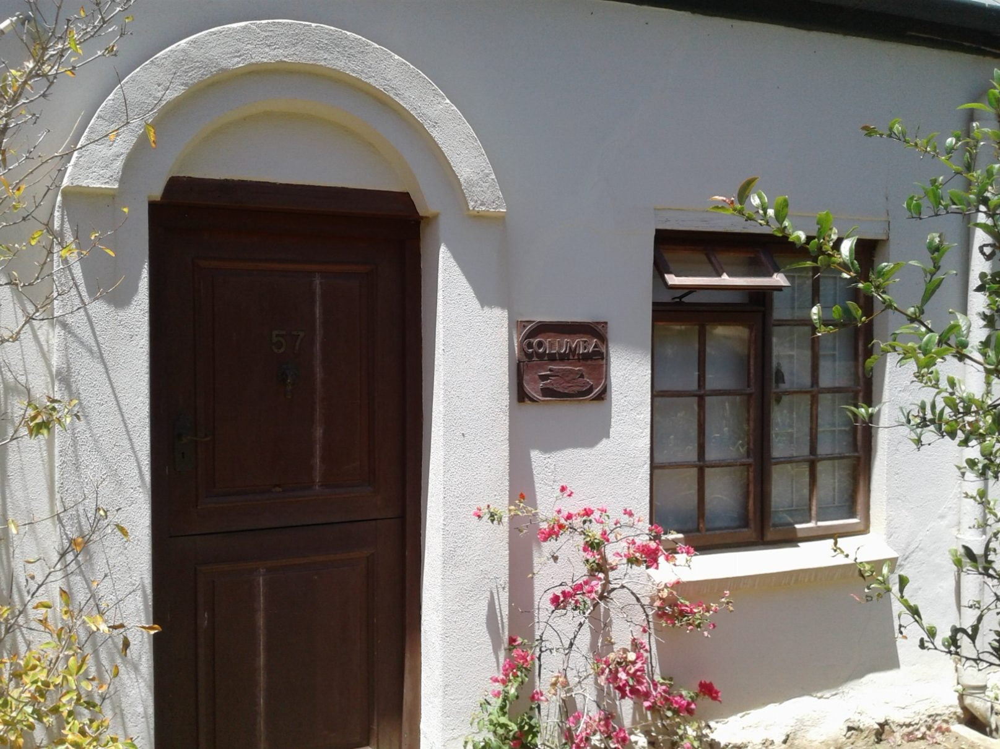
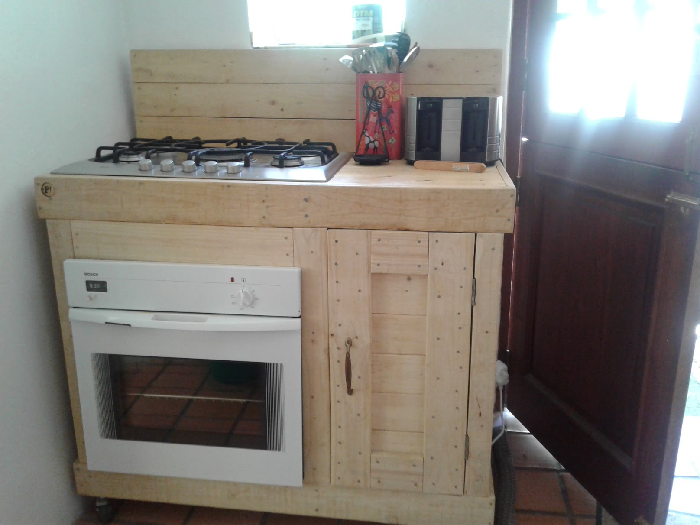
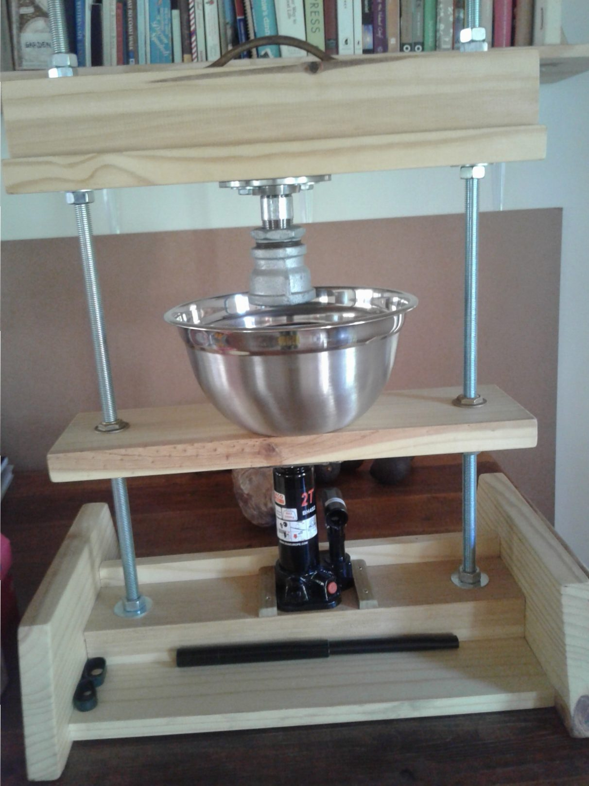
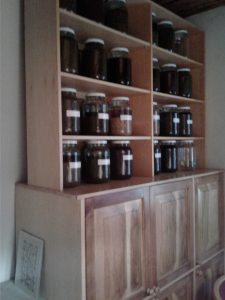
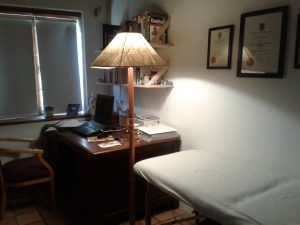
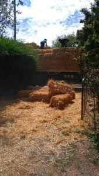

Columba, Greyton
Day 3. Arrived at Greyton after a beautiful drive along South coast, then inland to ’their’ mountains. Very reminiscent of Julian’s home environment.. Both have chosen mountain surroundings and dirt track roads (currently a quagmire in Spain). Must be nostalgia from their birth home, also on a dusty bumpy road
Woweeee!!! The cottage is incredible! They have worked so hard, acquiring by hit and miss , and sheer determination many new skills. Our hats off to them both…Catherine, mostly used to academia, and Dan after 6 years of virtual immobility…Well done both!
[caption id=“attachment_502” align=“alignnone” width=“1615”] Dan and Catherine’s cottage[/caption]
{kind=link}
[caption id=“attachment_505” align=“alignnone” width=“1616”] Kitchen from recycled pallets[/caption]
{kind=link}
Furniture made from pallets… Dan’s tincture press … Catherine’s consultation room with all her home pressed tinctures….
[caption id=“attachment_506” align=“alignnone” width=“1212”] Catherine’s tincture press[/caption]
{kind=link}
[caption id=“attachment_508” align=“alignnone” width=“225”] Tinctures in progress[/caption]
{kind=link}
[caption id=“attachment_507” align=“alignnone” width=“300”] Comfy Consultation[/caption]
{kind=link}
[caption id=“attachment_496” align=“alignnone” width=“169”] Straw Bale delivery[/caption]
{kind=link}
{kind=link}
Straw bales have been delivered, with which to build 2 small apartments for rental. Guesses as to what what we’ll be doing!!